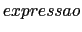
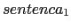
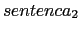

A execução de um programa C começa com a função main(). Em todos os exemplos que vimos até este momento, sentenças são executadas sequencialmente. A ordem sequencial de execução de senteças pode ser alterada se certas condições forem satisfeitas durante a execução do programa. Isto é chamado desvio condicional.
Todas as linguagens de programação oferecem comandos para o desvio condicional. O mais simples é a senteça if. Em C, ele tem o formato:
if ()
Quando uma sentença if é encontrada em um programa,
Considere o seguinte exemplo que converte uma fração digitada pelo usuário (numerador e denominador) em decimal e imprime o resultado:
#include <stdio.h> main(void) { int a, b; printf("Entre com uma fracao (numerador and denominador): "); scanf("%d %d", &a, &b); printf("A fracao em decimal eh %f\n", 1.0 * a / b); }
No exemplo acima, escrevemos 1.0 * a / b, já que a e b são do tipo int, e portanto a / b é uma divisão de inteiros e a parte fracional do resultado seria truncado, o que certamente não é o que desejamos.
Voce vê algo errado neste programa ? Uma coisa a ser notada é que se o usuário digitar um denominador igual a 0, nós teremos um erro de execução, já que o programa tentaria executar uma divisão por zero. O que é necessário fazer é testar se o denominador é igual a zero e dividir só no caso dele for diferente de zero. Poderíamos reescrever o programa acima da seguinte forma:
#include <stdio.h> main(void) { int a, b; printf("Entre com uma fracao (numerador e denominador): "); scanf("%d %d", &a, &b); if (b != 0) printf("A fracao em decimal eh %f\n", 1.0 * a / b); }
#include <stdio.h> main() { int num1, num2, aux; printf("Entre com dois numeros inteiros: "); scanf("%d %d", &num1, &num2); if (num1 > num2) { aux = num1; num1 = num2; num2 = aux; printf("Trocou \n"); } printf("Os numeros ordenados: %d %d\n", num1, num2); }
O programa do Exemplo 1 acima ficaria ainda melhor se ao invés de não fazer nada no caso do denominador ser zero, imprimirmos uma mensagem de erro ao usuário, explicando o que há de errado.
A sentença em C que permite fazermos isso é o if - else. O formato do if-else é:
if ()

else

Primeiro, a (que usualmente chamamos de condição) é avaliada. Caso a condição seja verdadeira (o que é equivalente a dizer que o valor é diferente de zero), entao a é executada. Caso contrário, a é executada.
Note que uma sentença pode ser simples ou composta. Se você quiser agrupar diversas sentenças para serem executadas, você pode colocá-las entre chaves ({ e }).
Por hora, vamos continuar com nosso exemplo simples e torná-lo mais explicativo:
#include <stdio.h> main(void) { int a, b; printf("Entre com uma fracao (numerador and denominador): "); scanf("%d %d", &a, &b); if (b != 0) printf("A fracao decimal e %f\n", 1.0 * a / b); else printf("Erro: denominador zero!\n"); }
#include <stdio.h> main(void) { int num; /* obtem um numero do usuario */ printf("Entre com um inteiro: "); scanf("%d", &num); /* imprime uma mensagem dizendo se o numero e par ou impar */ if (num % 2 == 0) printf("O numero e par.\n"); else printf("O numero e impar.\n"); }
É muito frequente utilizar o operador relacional == em expressões condicionais da sentença if. Por exemplo:
int saldo = 2000;
if (saldo == 1)
printf("Voce esta quebrado! \n");
else
printf("Seu saldo e %d\n", saldo);
Como a sentença saldo = 2000 inicializa o valor da variável saldo com 2000, a expressão saldo == 1 tem valor 0. Portanto, a senteça que segue o else será executada, e a
mensagem
Seu saldo e 2000
será impressa.
Agora, suponha que, devido a um erro, você tenha colocado = ao invés de ==:
int saldo = 2000;
if (saldo = 1)
printf("Voce esta quebrado! \n");
else
printf("Seu saldo e %d\n", saldo);
Agora, a expressão saldo = 1 tem valor 1. Portanto, a
sentença que segue o if será executada, e a mensagem
Voce esta quebrado!
será impressa. Além disso, a atribuição causará um efeito colateral, e alterará o valor de saldo para 1.
Tal uso do operador de atribuição não é ilegal, e não será detectado pelo compilador como erro. Portanto, tome cuidado com o uso de atribuição no lugar de igualdade. Tal erro é muito comum, e não é fácil de achar.
Como regra geral, NÃO utilize atribuições dentro de outras sentenças.